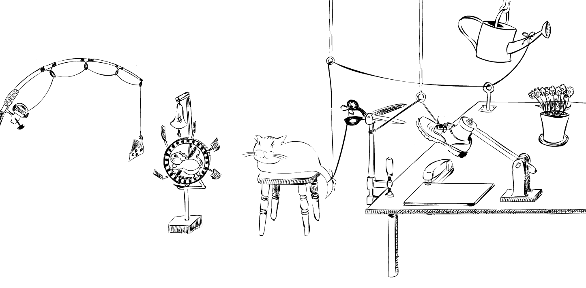

Mechanisms, Capacities, and Dependencies
Funded by a Reinhart Koselleck Project by the German Research Foundation (DFG), we’re developing and testing novel theories of causal learning and reasoning.
Causal cognition endows humans with impressive abilities. It allows us to predict and explain, plan actions, understand confoundings, make educated guesses about transfer situations, think about counterfactual alternatives, and use and engineer innovative devices. Our goal in this project is to better understand and explain the breadth and flexibility of causal cognition.

People
Michael Waldmann
Project Leader
Project leader.
- Institutional
website
Post-doc in the project.
- Research
Gate Site
Post-doc in the project.
- Personal
website
Post-doc in the project.
- Personal website
Post-doc in the project.
- Personal website
Project Funded Publications
Gasalla, P., Figueroa, J., Waldmann, M. R. and Dwyer, D. M. (2024). Beyond the information (not) given: Associative mechanisms vs representations of uncertainty in extinction in laboratory rats (Rattus norvegicus). Journal of Comparative Psychology.[PDF]
Marulanda-Hernández, J. C.,Wiegmann, A., & Waldmann, M. R.(2024). Camouflaged liability: How the distinction between civilians and soldiers influences moral judgement of permissible harm in war. European Journal of Social Psychology,1–14.[PDF]
Stephan, S (2024). Reasoning about actual causation in reversible and irreversible causal structures. Journal of Experimental Psychology: Learning, Memory, and Cognition. Advance online publication[PDF] [GitHub] [OSF][PrePrint] [PreReg][2024 Best Paper Award by Divison 3 of the APA.
 ]
]Stephan, S. (2023). Revisiting the narrow latent scope bias in explanatory reasoning. Cognition, 241, 105630.[PDF] [GitHub] [OSF][PrePrint]
Stephan, S., Engelmann, N., & Waldmann, M. R. (2023). The perceived dilution of causal strength. Cognitive Psychology, 140, 101540.[PDF] [GitHub] [OSF]
Wysocki, T. (2023). An event algebra for causal counterfactuals. Philosophical Studies, 180, 3533–3565.[PDF]
Wysocki, T. (2023). Conjoined cases. Synthese, 201, 197.[PDF]
Recent Talks and Conference Presentations
2024
Waldmann, M. R. (2024) Interpolating causal mechanisms. The paradox of knowing more. Second Annual Conference of the Society for Philosophy of Causation, Göttingen, July 2024.
Stephan, S. (2024) Reasoning about Actual Causation in Reversible and Irreversible Causal Structures. Second Annual Conference of the Society for Philosophy of Causation, Göttingen, July 2024.
Wysocki, T. (2024) Polymorphic Functions for a Better Semantics of Counterfactuals. Second Annual Conference of the Society for Philosophy of Causation, Göttingen, July 2024.
Copyright © 2023 Simon Stephan.